SB Trading: storyboard
The owner's two reference videos beside the built website (2026-11-14), scene by scene: the feeling each moment carries, what the site shows and does there, and what was left out of the reference on purpose. Scenes 1 to 5 are the scroll film (built from the showroom video by tools/build-film.py); scenes 6 to 9 are the interactive showroom, drawer and quote. Layout wireframes: wireframes.html.
Scene 1
Arrive: darkness
Mystery. Nothing but dark, then the first light between bamboo.
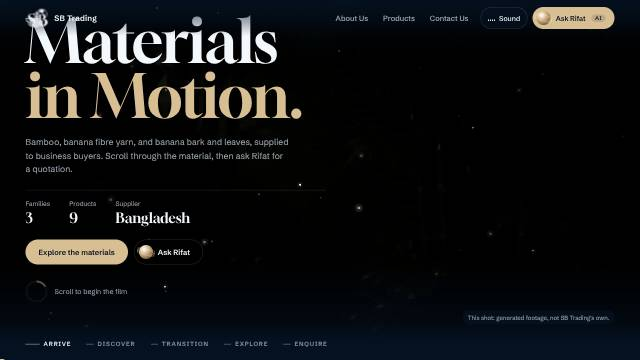
The film opens on the same dark grove. Over it: Materials in Motion., the three facts (3 families, 9 products, Bangladesh), Explore the materials and Ask Rifat. Gold dust drifts in the light shafts.
Scene 2
Into the light
Release. The grove opens onto a bright showroom.
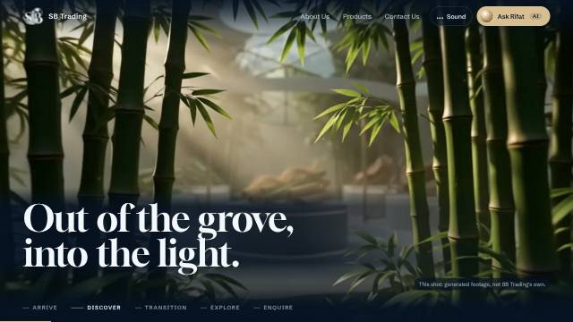
Scrolling walks forward through the grove toward the light; caption: Out of the grove, into the light.
Left out on purpose: The clip’s close-up of the showroom (2.0–2.9 s) is cut: its plinth cards misspell the company name.
Scene 3
The material, close
Intimacy. Wet bamboo, fibres lifting in warm light.
The same macro shot; caption: Bamboo, up close. (never claiming bamboo becomes SB’s yarn, which is banana fibre).
Left out on purpose: Glass cards with invented text drift at the frame edges; the shot is zoomed slightly and its edges softened so none is legible.
Scene 4
Fibre in motion
Flow. Golden fibres twisting through the air.
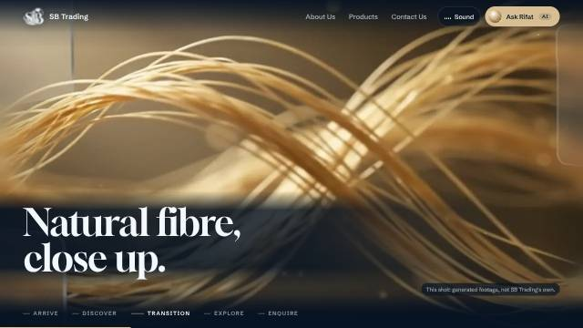
The same twist; caption: Natural fibre, close up.
Scene 5
The gallery
Clarity. Three lit cases, numbered: 01 Bamboo, 02 Banana fibre yarn, 03 Banana bark.
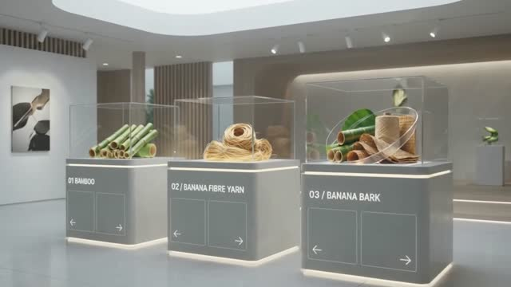
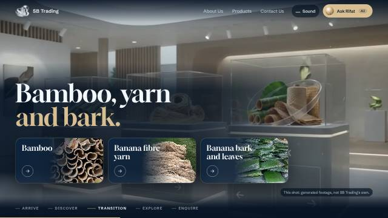
The film ends in the same gallery. Caption Bamboo, yarn and bark. with the three family cards, each going straight to that family.
Scene 6
One family, on its plinth
Focus. The camera moves in on one case.
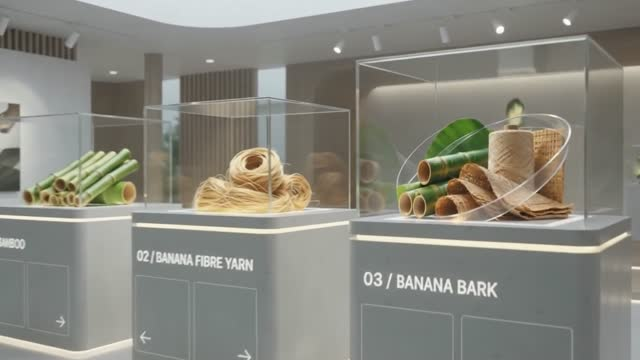
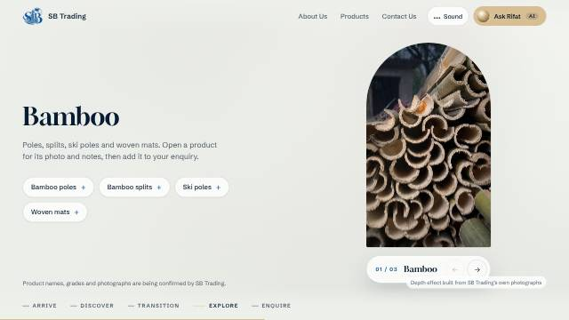
Explore is the bright showroom: the family’s real photograph in an arch on a plinth (01 / 03 Bamboo, arrows to the next), its products as chips beside it.
Scene 7
The spec drawer
Confidence. The product’s facts on a pane of glass.
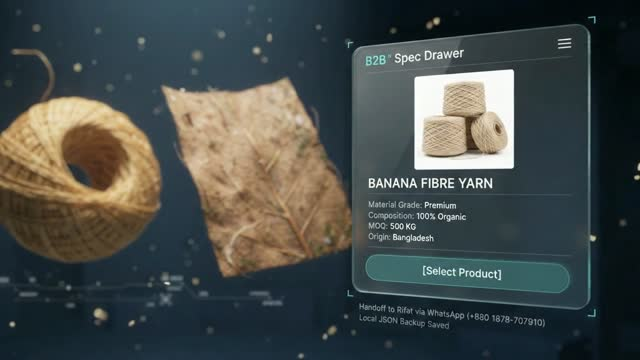
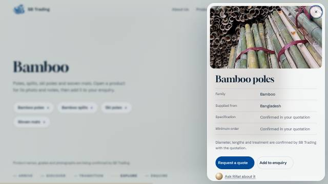
A product opens a white frosted glass drawer: photograph, family, grade, supplied from Bangladesh, specification and minimum order (confirmed in the quotation), Request a quote in brand blue.
Left out on purpose: The clip’s invented figures (minimum order, composition) are not shown: SB Trading has not confirmed them.
Scene 8
Request a quote
Ease. The form appears beside the product, product already chosen.
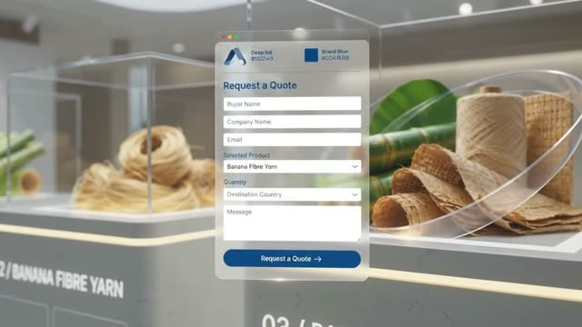
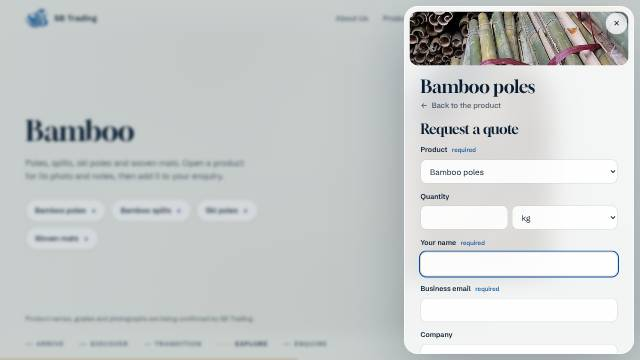
Request a quote turns the drawer into the enquiry form with the product chosen and the cursor in Your name.
Scene 9
Hand-off
Trust. The enquiry goes to Rifat and on to WhatsApp.
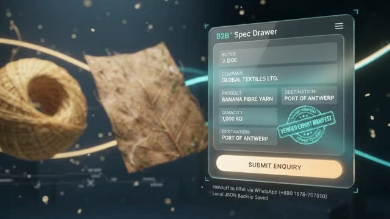
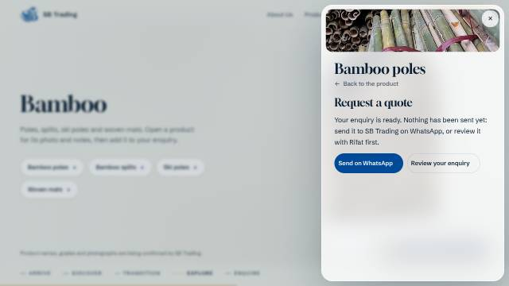
After Prepare enquiry: nothing has been sent yet; Send on WhatsApp (+880 1878-707910) or Review your enquiry with Rifat.